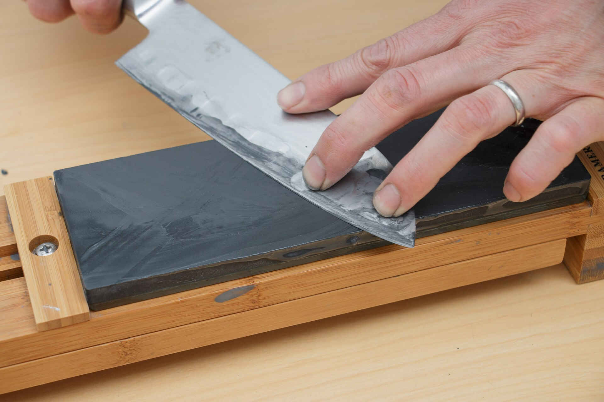
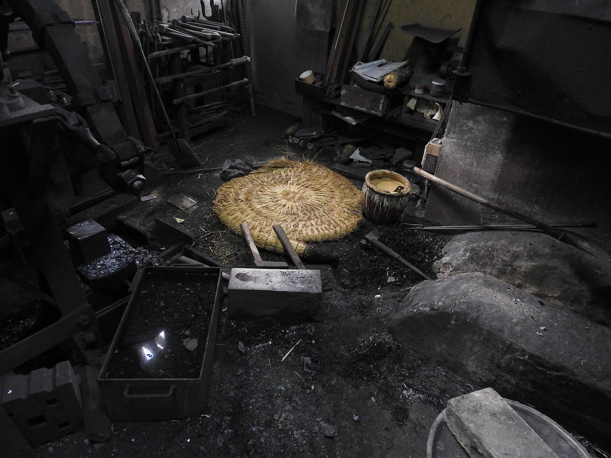
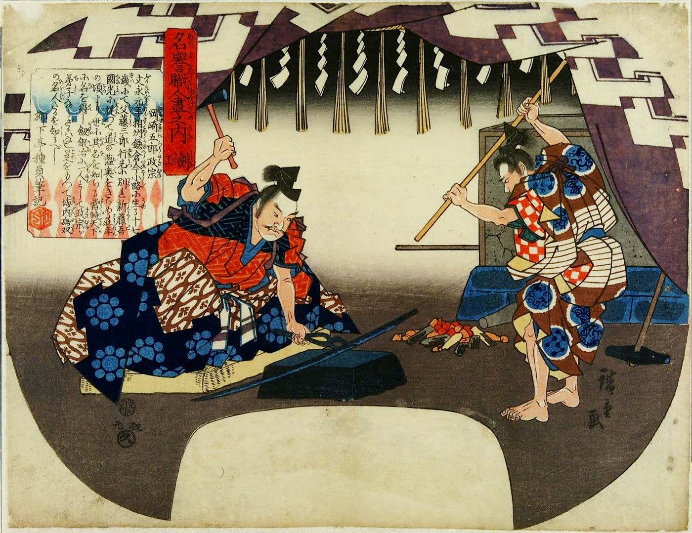

Listen for the stone going dry
- When
- When the sharpening sound turns higher and scratchy
- Do
- Stop and splash water on the stone
- Why
- A dry stone loses its slurry, so the blade catches and heats up. The slurry is what actually sharpens.
A phone clipped to the master's tool records how they really work, asks them why at the moments no manual explains, and coaches the next hands at the same stroke, in their own language.

Tanaka, the demo workshop's edge finisher, retires in 2027. In one recording TSUKUMO found the habits he never mentions, because to him they are just how it's done.

The master just works. Angle, rhythm, pressure and the stone's sound stream from the phone on the tool.
Moments where they broke from steady work become a handful of questions, answered by voice after the shift.
Apprentices work against the master's ghost. The tool buzzes on drift and the master's tip appears where his habit happened.
Measured skill passports, and a radar of which skills leave with whom, and when.
Every answer becomes a kotsu card: when it applies, what to do, and why. Claude structures it once and writes it in Japanese, English, Vietnamese and Indonesian, so the apprentice from Nam Dinh gets the same reason the master gave.

Most of the new hands in Japan's workshops now arrive from abroad, with a few years and a language between them and the master. TSUKUMO keeps the master at their side after he's gone: his stroke as a ghost on the tool, his reasons on the card.
Works as usual and answers a few questions. Earns a royalty each time one of their cards coaches someone, during their career and after it.
Gets a buzz on the tool when the angle drifts, the master's reasons in their own language, and a passport that proves the skill.
Sees which skills retire with whom, who has measurably taken them over, and where nobody has yet.
.jpg){kind=link}